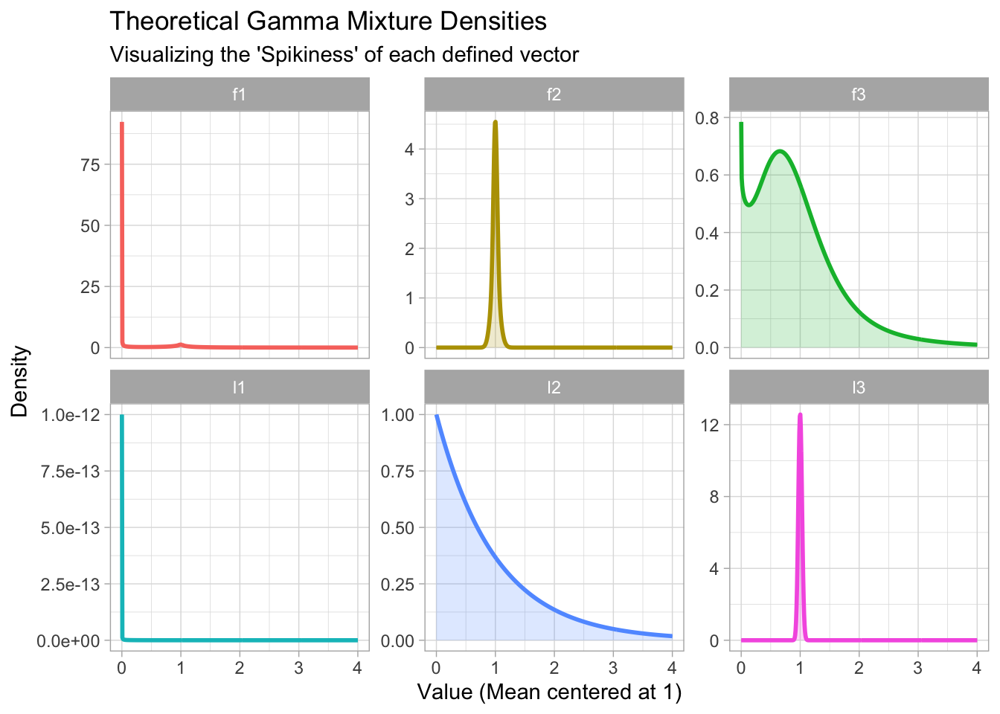
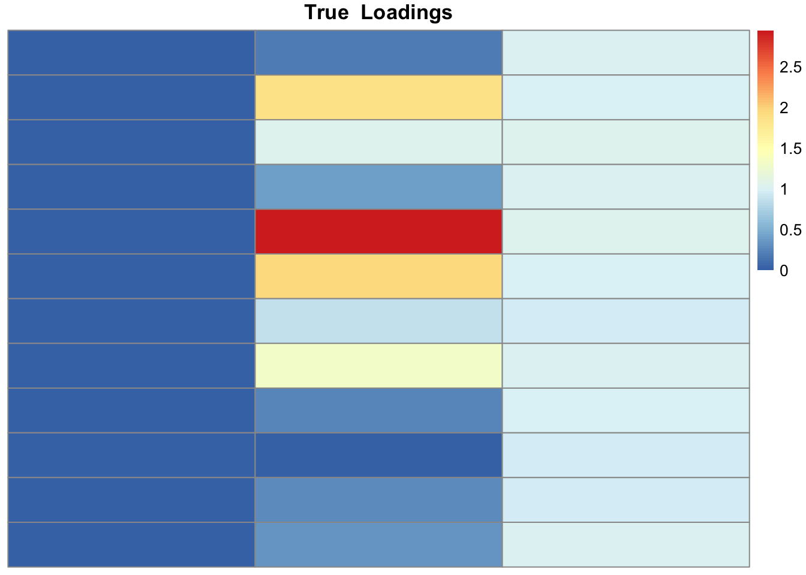
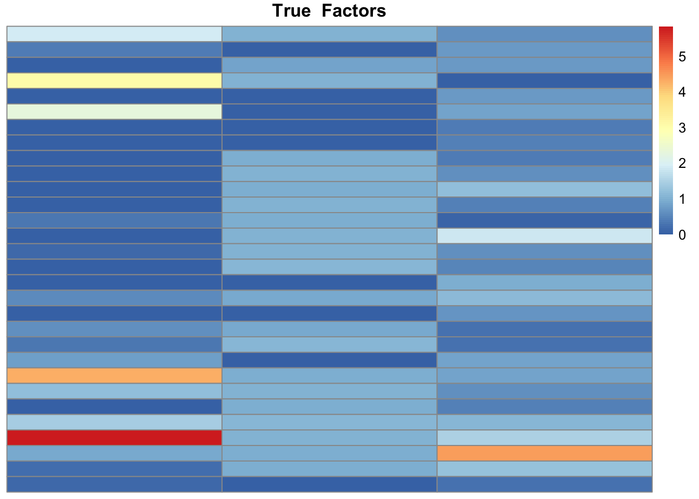
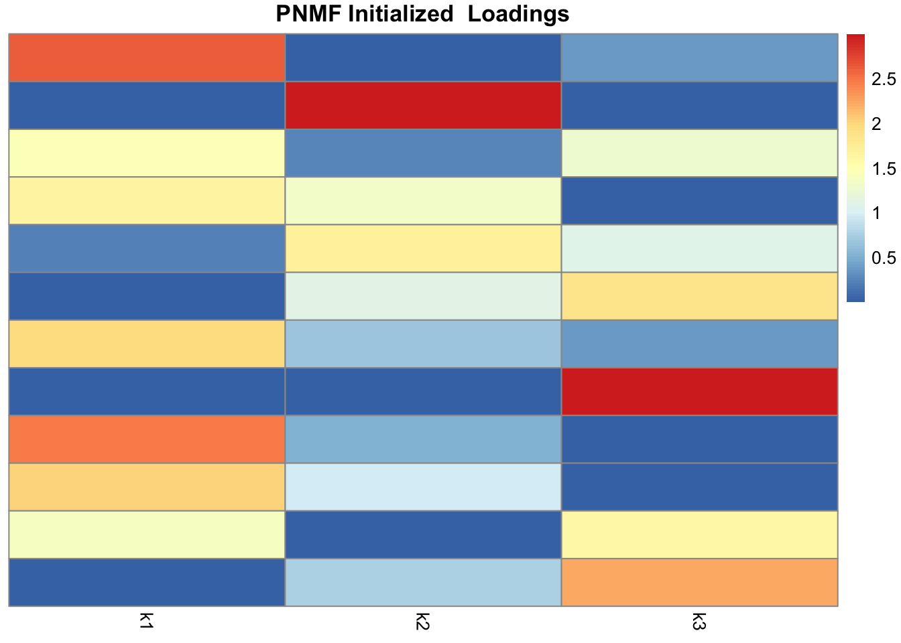
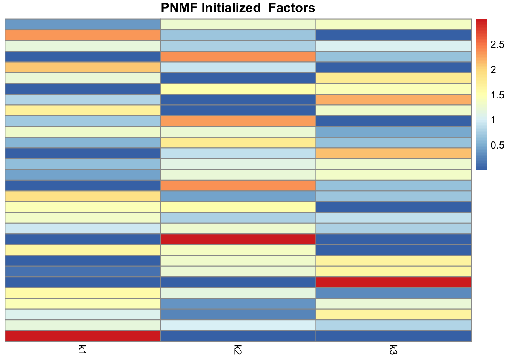

Main page for EBPMF-BG
Data Generation
source(here("docs","code","data_generate.R"))
source(here("docs","code","utils.R"))
library(pheatmap)
library(ggplot2)
# Generate synthetic L, F, X
# Define mixture weights for each L_k and F_k
# 21st mixture component (shape, rate) value is 1
l1 <- c(1, rep(0, 33))
l2 <- c(rep(0, 20),1, rep(0,13))
l3 <- c(rep(0, 33), 1)
f1 <- c(rep(1, 34))
f2 <- c(1, 1, rep(0, 30), 1, 1)
f3 <- c(rep(0, 19), 1, 1, 1, 1, rep(0, 11))
# Weights will be normalized by column inside visualize_mixtures or generate_synthetic
w_matrix <- cbind(l1,l2,l3,f1,f2,f3)
visualize_mixtures(w_matrix)
# "mix", "clear membership"
data <- generate_synthetic(data_type="mix", w_matrix=w_matrix, n=12, p=30, K=3)
# Visualize Ground Truth L, F
visualize_lf(data$L, data$F, "True")
Initialization
source(here("docs","code","initialize.R"))
source(here("docs","code","utils.R"))
library(Matrix)
X = Matrix(data$X, sparse=TRUE)
library(fastTopics)
# returns list(qg=qg, b=b, a=a)
# where qg = list(ql = ql, gl = gl, kl_l = kl_l, qf = qf, gf = gf, kl_f = kl_f)
init_res = initialize(X=X, K=3)Initializing factors using Topic SCORE algorithm.
Initializing loadings by running 10 SCD updates.
Fitting rank-3 Poisson NMF to 12 x 30 sparse matrix.
Running at most 50 SCD updates, without extrapolation (fastTopics 0.6-192).Before Main Iteration Loop
### Prepare for main update
# Store observed data (X) matrix details
X_dim = Matrix::summary(X)
X_rs = Matrix::rowSums(X)
X_cs = Matrix::colSums(X)
# Get elements from init_res = initialize(X=X, K=3)
qg = init_res$qg
b = init_res$b
a = init_res$a
rm(init_res)
# Plot Initial Guess at L, F
visualize_lf(qg$ql_norm, qg$qf_norm, "PNMF Initialized")
Z update
We update \(\hat Z\) using property \(\hat z_{ijk} = \zeta_{ijk} X_{ij}\) (in other words, \(\mathbb{E}[Z | X, L, F]\)), following the specific update for \(\zeta_{ijk}\) that maximizes ELBO: \[ \begin{align} \zeta_{ijk} &= \frac{\exp \Big(\langle \log l_{ik} \rangle + \langle \log f_{jk} \rangle \Big)}{\sum_k \Big[\exp \Big(\langle \log l_{ik} \rangle + \langle \log f_{jk} \rangle \Big) \Big]} \\ &= \frac{\exp \Big(\langle \log l_{ik} \rangle + \langle \log f_{jk} \rangle \Big)}{\sum_k \Big[\exp \Big(\log l_{ik} + \log f_{jk} \Big) \Big]} \text{ given L, F are fixed during Z update} \\ &= \frac{\exp \Big(\langle \log l_{ik} \rangle + \langle \log f_{jk} \rangle \Big)}{\sum_k \Big[ l_{ik} f_{jk} \Big]}\\ &= \frac{\exp \Big(\langle \log l_{ik} \rangle + \langle \log f_{jk} \rangle \Big)}{\lambda_{ij}}\\ &= \frac{l_{ik}f_{jk}}{\lambda_{ij}}\\ \end{align} \]
# Z update
getlambda_ijk <- function(k, a){
lambda_ijk = qg$qllog_norm[X_dim$i,k] + qg$qflog_norm[X_dim$j, k] - a # makes matrix
return(lambda_ijk)
}
zupdate_k <- function(X_dim, k){
b_k = getlambda_ijk(k,a)
zeta_ijk = exp(b_k - b)
z_hat_k = sparseMatrix(i = X_dim$i,
j = X_dim$j,
x = (X_dim$x * zeta_ijk))
return(z_hat_k) # consider returning only sum over i for F update. cs
}F update
Finding good prior on \(f_k\). Notice \(Pr(y_{jk}|f_{jk})\) is Poisson PMF of \(y_{jk} \sim Poi(s_k f_{jk})\), and g(f_{jk}) is a mixture of gammas: \(f_{jk} \sim \sum_{m=1}^{M} \phi_{m}\, \Gamma(\cdot;\,\alpha_m, \beta_m)\). Then, the argmax problem turns into finding mixture proportions \(\phi_m\) that maximizes the integral. Integrated Poisson PMF times Gamma PDF is negative binomial PDF. Thus, the argmax problem is finding \(\phi \in \mathbb{R}^M\) that maximizes \(NB (y_{jk}; n = \alpha_m, p = \frac{\beta_m}{\beta_m + s_k})\).
\[ \begin{align} \hat g (f_{k}) &= \argmax_g \big[\int Pr(y_{jk} | f_{jk}) \cdot g(f_{jk}) d f_{jk} \big] \\ &= \argmax_{\phi} \big[\int Pr(y_{jk} | f_{jk}) \cdot \sum_{m=1}^{M} \phi_{m}\, \Gamma(\cdot;\,\alpha_m, \beta_m) d f_{jk} \big] \\ &= \argmax_{\phi} \sum_{j=1}^{P} \sum_{m=1}^{M} \phi_{m} NB (y_{jk}; n = \alpha_m, p = \frac{\beta_m}{\beta_m + s_k}) \end{align} \] Matrix NB_LL \(\in \mathbb{R}^{P \times M}\) stores NB log likelihood over all j and m (for a single factor k). mixsqp can estimate maximum likelihood \(\phi\).
# # F update
# library(mixsqp)
# source(here("docs","code","utils.R"))
#
# fupdate_k <- function(z_hat_k, k){
# # We are working with a single k here
#
# # assuming L is n x k matrix
# # Now we have y_jk \sim Poi(s_k f_{jk})
# s <- colSums(qg$ql_norm)[[k]] # number
# y_j <- colSums(z_hat_k) # R^p
#
# pis <- qg$gf[[k]]$pi # R^M
# unif_mix = gammamix()
# shapes = unif_mix$shape
# rates = unif_mix$rate
# nbprob <- rates / (s + rates) # R^M
#
# # Generate the P x M matrix for Negative Binomial Log Likelihood
# # Iterate 1..M. For each m: calculate likelihood for all P data points.
# NB_logL <- dnbinom_cts_log(x = y_j, size = shapes, prob = nbprob)
# log_L_max <- apply(NB_logL, 1, max) # subtract row maximums
# safe_max <- log_L_max
# safe_max[is.infinite(log_L_max)] <- 0
# NB_L <- exp(NB_logL - safe_max)
# NB_L[is.infinite(log_L_max), ] <- 0 # if LL -inf, L should be zero
#
# fit <- try(mixsqp(NB_L, x0 = pis))
#
# new_pi = fit$x #R^M
# new_g = gammamix(pi = new_pi, shape = shapes, rate = rates)
#
# NB_L_weighted = t(t(NB_L) * new_pi) # need to calculate in linear, not log space
# print(NB_L_weighted)
# print((rowSums(NB_L_weighted)))
# return(NULL)
#
# q_pi = NB_L_weighted / (rowSums(NB_L_weighted)+ 1e-15) # R^M
#
# print(length(shapes))
# print(length(rates))
# print(length(q_pi))
# new_q = gammamix(pi = q_pi, shape = shapes, rate = rates) # TODO new_q doesn't use y_j and s?
#
# updated_prior_ll = sum(NB_L_weighted + safe_max)
#
# # KL divergence = Expected LL of Posterior (y_j given ql mean) - log likelihood of prior
# denom <- shapes + matrix(y_j, nrow=length(y_j), ncol=length(shapes), byrow=FALSE)
#
# print(q_pi)
# print(y_j)
# print(denom)
# new_fj = q_pi * denom/(rates + s)
# print("------------------------------------------------------------------------")
# print(new_fj)
# return(NULL)
#
# mask <- (y_j != 0)
# E_loglik = - sum(s * new_fj)
# + sum(y_j[mask] * log(s_list[mask]))
# + sum(y[mask]*log(new_fj[mask]))
# - sum(lgamma(y_j[mask] + 1))
# new_kl = E_loglik - updated_prior_ll
#
# newf_qg = list(qf = new_q, gf = new_g, kl_f = new_kl, new_fj = new_fj)
#
#
# return(newf_qg)
# }
#
# fupdate_k(zupdate_k(X_dim, 1), 1)# ELBO calculation
# ELBO = - sum( colSums(l0 * qg$qls_mean) * colSums(f0 * qg$qfs_mean) ) + sum(X_dim$x * (log(l0[X_dim$i]) + log(f0[X_dim$j]) + b + a) ) - KL - ll_const
# Putting it together
# maxiter = 1000
# ELBOs = numeric(maxiter)
# KLs = replicate(0, maxiter)
#
# K = 3
# for (iter in 1:maxiter){
# for (k in 1:K){
# z_hat = zupdate_k(X_dim, k)
# newf_qg = fupdate_k(z_hat, k)
#
# KLs[iter] <- KLs[iter] + newf_qg$kl_f
# qg$gf = newf_qg$new_g
# qg$qf = newf_qg$new_q
# qg$qf_norm[[k]] = newf_qg$new_fj
#
# rm(newf_qg)
# rm(z_hat)
# }
# }
sessionInfo()R version 4.5.0 (2025-04-11)
Platform: x86_64-apple-darwin20
Running under: macOS Sequoia 15.4.1
Matrix products: default
BLAS: /Library/Frameworks/R.framework/Versions/4.5-x86_64/Resources/lib/libRblas.0.dylib
LAPACK: /Library/Frameworks/R.framework/Versions/4.5-x86_64/Resources/lib/libRlapack.dylib; LAPACK version 3.12.1
locale:
[1] en_US.UTF-8/en_US.UTF-8/en_US.UTF-8/C/en_US.UTF-8/en_US.UTF-8
time zone: America/Chicago
tzcode source: internal
attached base packages:
[1] stats graphics grDevices utils datasets methods base
other attached packages:
[1] fastTopics_0.6-192 Matrix_1.7-3 ggplot2_3.5.2 pheatmap_1.0.13
[5] here_1.0.2 workflowr_1.7.1
loaded via a namespace (and not attached):
[1] gtable_0.3.6 xfun_0.52 bslib_0.9.0
[4] htmlwidgets_1.6.4 processx_3.8.6 ggrepel_0.9.6
[7] lattice_0.22-6 callr_3.7.6 quadprog_1.5-8
[10] vctrs_0.6.5 tools_4.5.0 ps_1.9.1
[13] generics_0.1.4 parallel_4.5.0 tibble_3.2.1
[16] pkgconfig_2.0.3 data.table_1.17.0 SQUAREM_2021.1
[19] RColorBrewer_1.1-3 RcppParallel_5.1.10 lifecycle_1.0.4
[22] truncnorm_1.0-9 compiler_4.5.0 farver_2.1.2
[25] stringr_1.5.1 git2r_0.36.2 progress_1.2.3
[28] RhpcBLASctl_0.23-42 getPass_0.2-4 httpuv_1.6.16
[31] htmltools_0.5.8.1 sass_0.4.10 yaml_2.3.10
[34] lazyeval_0.2.2 plotly_4.10.4 crayon_1.5.3
[37] tidyr_1.3.1 later_1.4.2 pillar_1.10.2
[40] jquerylib_0.1.4 whisker_0.4.1 uwot_0.2.3
[43] cachem_1.1.0 gtools_3.9.5 tidyselect_1.2.1
[46] digest_0.6.37 Rtsne_0.17 stringi_1.8.7
[49] purrr_1.0.4 dplyr_1.1.4 ashr_2.2-63
[52] labeling_0.4.3 cowplot_1.1.3 rprojroot_2.1.1
[55] fastmap_1.2.0 grid_4.5.0 cli_3.6.5
[58] invgamma_1.1 magrittr_2.0.3 withr_3.0.2
[61] prettyunits_1.2.0 scales_1.4.0 promises_1.3.2
[64] rmarkdown_2.29 httr_1.4.7 hms_1.1.3
[67] pbapply_1.7-2 evaluate_1.0.3 knitr_1.50
[70] viridisLite_0.4.2 irlba_2.3.5.1 rlang_1.1.6
[73] Rcpp_1.0.14 mixsqp_0.3-54 glue_1.8.0
[76] rstudioapi_0.17.1 jsonlite_2.0.0 R6_2.6.1
[79] fs_1.6.6